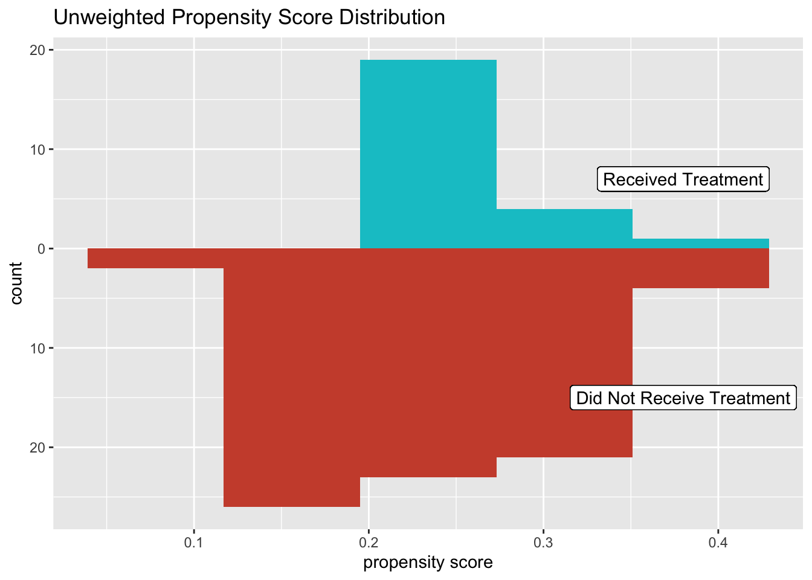

The positivity assumption states that each individual must have non-zero probabilities of being assigned to each exposure group. To have a non-zero probability, they would need to have an average unit assignment probability strictly between 0 and 1 for both groups. Women who suffer from migraines are not supposed to take certain oral contraceptives, so they would never be assigned to the treatment in a birth control study. So, what if some were included in the trial? What can go wrong? We will run a simulation to explore this question, then talk about the what’s happening behind the scenes.
We’ll start by creating a confounding variable z, which will be sampled randomly around the standard normal. This means, we would expect to have roughly equal numbers of z observations above and below zero. As a confounder, z acts on both the exposure x and outcome y, so both variables are generated based on the covariate z. Now, if we violate positivity, that means that there is at least one observation with no chance of being assigned to the treatment (or no chance of being assigned to control), so we will assign the probabilities of x to 0 if the \(z \ge 0.5\).
n = 100
set.seed(5)
# generate data
datsim = tibble(
z = rnorm(n),
xlin = z + rnorm(n),
x_p = ifelse(z < .5, exp(xlin)/(1 + exp(xlin)), 0),
x = rbinom(n,1, x_p),
y = z + x
)# propensity score model
glm_sim = glm(x ~ z,
data = datsim,
family = binomial())
# add propensity scores to df
datsim = glm_sim %>%
augment(type.predict = "response",
data = datsim)Based on this data, the propensity score model then determines how likely a person is to be assigned to the treatment group. The probabilities of certain x’s always being 0 is baked in already, so none of the propensity scores are actually zero here. Still, we an incredible imbalance of data already.
df_plot_ps_simuw = datsim %>%
tidyr::pivot_wider(names_from = x,
values_from = .fitted,
names_prefix = "x_p")
ggplot(df_plot_ps_simuw)+
geom_histogram(bins = 5,
aes(x = x_p1),
fill = "turquoise3")+
geom_histogram(bins = 5,
aes(x = x_p0,
y = -stat(count)),
fill = "tomato3")+
geom_label(
label = "Received Treatment",
x = .38,
y = 7
)+
geom_label(
label = "Did Not Receive Treatment",
x = .38,
y = -15
)+
scale_y_continuous("count", label = abs) +
scale_x_continuous("propensity score") +
labs(title = "Unweighted Propensity Score Distribution")
datsim %>%
summarise(observed_causal_effect = mean(y[x == 1]) -
mean(y[x == 0]))## # A tibble: 1 × 1
## observed_causal_effect
## <dbl>
## 1 0.666This causal effect is meaningless, because of bias, which we will discuss later. Violating assumptions is clearly the devil’s work. Just for fun, let’s weight the model so that causal effect is even more affected by these propensity scores.
# calculate weights and add to df
datsim = datsim %>%
mutate(w_ate = x/ .fitted + (1 - x)/(1 - .fitted))# propensity score model
ggplot(df_plot_ps_simuw)+
geom_histogram(bins = 5,
aes(x = x_p1),
fill = "turquoise3")+
geom_histogram(bins = 25,
alpha = .5,
aes(x = x_p1,
weight = datsim$w_ate),
fill = "turquoise3")+
geom_histogram(bins = 5,
aes(x = x_p0,
y = -stat(count)),
fill = "tomato3")+
geom_histogram(bins = 25,
alpha = .5,
aes(x = x_p0,
weight = datsim$w_ate,
y = -stat(count)),
fill = "tomato3")+
geom_label(
label = "Received Treatment",
x = .52,
y = 7
)+
geom_label(
label = "Did Not Receive Treatment",
x = .52,
y = -14
)+
scale_y_continuous("count", label = abs) +
scale_x_continuous("propensity score") +
labs(title = "Unweighted Propensity Score Distribution")We get an ATE of 0.83.
datsim %>%
summarise(
ate = sum(y*x*w_ate)/sum(x*w_ate) - sum(y*(1 - x)*w_ate)/
sum((1-x)*w_ate)
)## # A tibble: 1 × 1
## ate
## <dbl>
## 1 0.840How off are these weighted and unweighted estimates? We’ll group by z to find out. When we do this, observations for individuals with z > 0.5 will not be included in the causal estimate for the general population. This is essentially how the problem of positivity is avoided in practice: study design establishes eligibility criteria that would exclude such persons from being in the study. Hence, our migraine sufferers would not be included in the study.
# creating group variable to filter
datsim$inpop = ifelse(datsim$z < .5,1,0)
datsim %>%
group_by(inpop)%>%
summarise(
observed_causal_effect = sum(y*x)/sum(x) - sum(y*(1 - x))/
sum((1-x)),
ate = sum(y*x*w_ate)/sum(x*w_ate) - sum(y*(1 - x)*w_ate)/
sum((1-x)*w_ate)
)## # A tibble: 2 × 3
## inpop observed_causal_effect ate
## <dbl> <dbl> <dbl>
## 1 0 NaN NaN
## 2 1 1.37 1.49#mean(y[x == 1]) - mean(y[x == 0])Our unweighted causal effect was pulled down considerably by 0.699, and our ATE was penalized about 0.645. That is some impact!
We use causal estimands in practice regularly, because they are unbiased when we meet the underlying assumptions. For our causal estimator \(\hat{\tau}\) to be unbiased, we need each \(X_i\) to be random. When \(X_i\) is random, we are able to take the expected value and see that \(E[\hat{\tau}] = \tau\) . But wait, we made some of those \(X_i\)’s above not random. Our \(E[X_i|Z] = 0\).
When an individual has a unit assignment probability of 0 or 1, that means he/she will either never or always be assigned to the treatment group. From an intuitive perspective, if someone can never be part of the other group, they are fundamentally different from the others in the trial. The reason that our causal analysis works is that we are comparing people who could theoretically be in either group and therefore are similar. When someone cannot be in a particular group, we are conditioning on a zero-probability event.